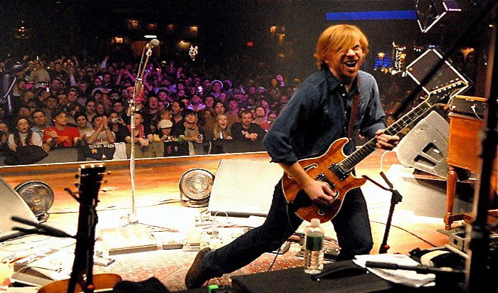

The Face of Phish- Trey Anastasio
Trey Anastasio
Mike Gordon
Page McConnell
Jon Fishman
| Home | Band Members | History | Popular Discography | Live |
The Face of Phish- Trey Anastasio
Trey Anastasio
Mike Gordon
Page McConnell
Jon Fishman
Trey Anastasio (born Ernest Joseph Anastasio III) on September 30, 1964)is an American guitarist, composer, and vocalist noted for his work with the rock band Phish, and his orchestral "Evenings with Trey Anastasio" performed with the New York Philharmonic, the Los Angeles Philharmonic, the Atlanta Symphony Orchestra, the Baltimore Symphony, the Pittsburgh Symphony, and the Colorado Symphony.
Mr. Anastasio is the co-composer of the Broadway musical Hands on a Hardbody. In addition to his orchestral compositions, he is credited by name as composer of 152 Phish original songs, 140 of them as a solo credit, in addition to 41 credits attributed to the band as a whole. 
Anastasio was born in Fort Worth, Texas and moved to Princeton, New Jersey when he was three. His father, Ernest Anastasio Jr., was an executive vice president at the Educational Testing Service. His mother Dina (née Brown) was a children's book author and editor of Sesame Street Magazine. He grew up with his sister Kristy. Anastasio attended Princeton public schools through the fourth grade, then transferred to Princeton Day School. He graduated from The Taft School along with The Dude of Life, who helped pen such Phish compositions as "Suzy Greenberg", "Run Like An Antelope", "Slave to the Traffic Light", and "Dinner and a Movie". At Taft, he created his first two bands, Red Tide and Space Antelope. In 1978, he saw concerts by Pat Metheny and King Crimson and refers to this period as the "one year that changed me."
Anastasio attended the University of Vermont and Goddard College.
Anastasio has employed the services of his friend, luthier and audio-technician Paul Languedoc (Phish's soundman from 1986–2004) throughout his career. The highly resonant hollow-body electric guitars built by Languedoc for Anastasio, his Ibanez Tube Screamers, and Ross Compressors are key to his signature tone. Trey has several custom Languedoc hollowbody electric guitars, which make use of set maple necks with 24-fret ebony fret boards and dual Seymour Duncan SH-1 '59 humbucker pickups. Anastasio's electric guitar technique is largely conventional; he does not typically make use of tapping techniques and does not usually play slide guitar (an example of when he does is in the Oysterhead section of Les Claypool's 5 Gallons of Diesel) but is known to be competent at both techniques. He normally uses a 2.0mm Adamas graphite guitar pick, but does not always do so. Melodically, he often incorporates modes, notably the dorian, mixolydian, and locrian, as well as pentatonic scales. In addition to scales, Anastasio makes abundant use of arpeggios while improvising as well as in his compositional material. He often uses pre bends in order to end a jam.